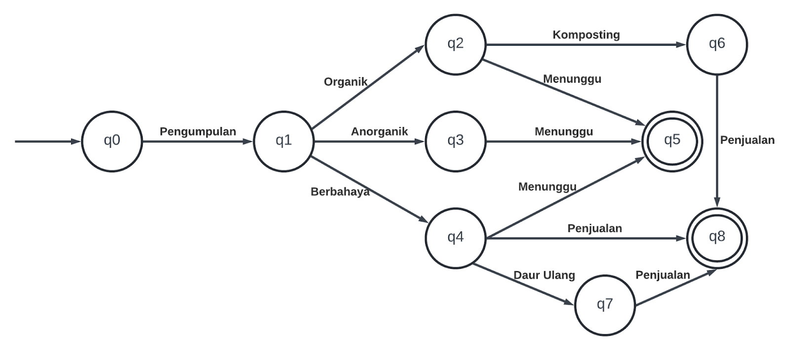

Pemilahan Sampah
Pilih Jenis Sampah:
-- Pilih Jenis Sampah --
Organik
Anorganik
Berbahaya

Proses Berlanjut
Transisi yang menunjukkan bahwa proses akan berlanjut ditandai dengan warna hijau.
Keterangan Transisi Antar Keadaan dalam FSA
q0 (Awal): Titik awal di mana sampah dihasilkan.
q1 (Pemilahan): Sampah yang sudah dikumpulkan dipilah berdasarkan jenisnya.
q2 (Organik): Sampah yang dipilah sebagai organik dimasukkan ke tempat sampah organik.
q3 (Anorganik): Sampah yang dipilah sebagai anorganik dimasukkan ke tempat sampah anorganik.
q4 (Berbahaya): Sampah yang dipilah sebagai berbahaya dimasukkan ke tempat sampah B3 atau berbahaya.
q5 (Penyimpanan): Sampah yang sudah dipilah menunggu dijemput ke TPS.
q6 (Kompos): Sampah organik diolah menjadi pupuk kompos.
q7 (Barang Daur Ulang): Mendaur ulang sampah anorganik menjadi barang baru yang dapat digunakan kembali.
q8 (Hasil Penjualan): Sampah yang sudah dipilah dapat dijual ke bank sampah atau tempat lain.